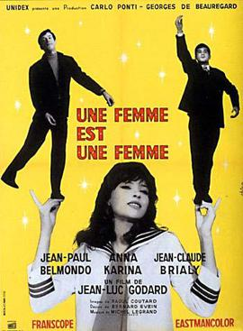

Jean-Luc Godard
1961
84 minutes
This is a weird and horny early Godard film. It's kind of a musical but not really. It's mildly experimental in that the actors sometimes mildly break the fourth wall. There are open references to other films the actors previously were in. It ends on a nearly-untranslatable French pun. It's playful and charming and stupid and smutty and a little endearing.
The film stars Anna Karina as a stripper (!) who wants to have a baby with her boyfriend, but he is reluctant so she tries to get his friend to knock her up instead. This makes for an uncomfortable film in which people want to fuck, but not just out of horniness but to make an actual baby, shockingly out of wedlock! It's the kind of uncomfortable horny that people seemed to be in your father's generation, and it makes you skin crawl a bit. Even in infidelity, the idea isn't to have consequence-free sex, which is looked upon as a failure, but to actually plant your seed into someone's fertile womb. You uncomfortably imagine your father leering at some woman who is not your mother and fantasizing about starting a nuclear family with that woman instead. It makes you slightly jealous even as his son and not his wife.
You find Anna Karina extremely attractive. It's fun to imagine taking her to bed and doing fun things with her. But you would be horrified if in the throes of passion she started saying naughty things to you about how much she wanted one of your sperm to take root inside her and turn into a child that would share half of your DNA. You've never wanted that with any woman, in fact, not even your wife. This is true to the point where the vast majority of your sexual encounters over the year, even with multiple different forms of contraception involved, have not ended in a "shot on goal" that would result in some monster that was half you and half whatever woman was eager to allow you to finish inside her unimpeded. You would (and have) found that sort of request extremely alarming at best and suspicious at worst.
You don't want to think about this too hard. But watching a nearly ninety-minute film on precisely this topic dumps it straight on your sizzling grill of a brain to cook and burn and stink up your apartment for the following hour or two, and trying to discuss this film with anyone else just makes it worse. The concept is meant to be titillating, not gross, so at some point someone was getting off on this. Probably your dad. This is exactly the sort of dumbfuck thinking that might lead someone into some oops-I-hope-I-didn't-knock-up-that-stripper scenario and through a comedy of errors try to wriggle out of trouble by enlisting in the Army during the Vietnam War. Not to suggest that's what happened or anything. As badly as he wanted to be the next James Bond, your father was more Antoine Doinel than any character ever portrayed by Alain Delon, though he did have an undeniable amount of empathy and charm.
In any case, sperm-with-a-purpose isn't anything you like thinking about in movies from the 1960s, or really any era. You'd rather just imagine it being wiped away with a damp cloth--or not imagine it at all, if possible.
Time to choose something different: